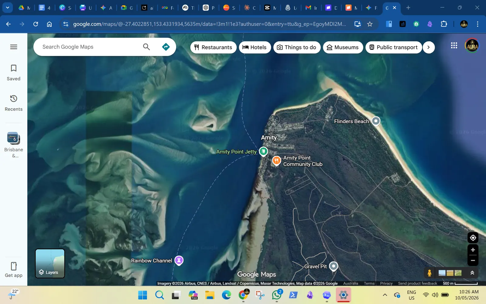

Strength, balance and mobility
Australian physical activity guidance supports regular movement and strengthening. Use this lightly to support QR routines and equipment choices.
Evidence
The useful evidence is practical: official activity guidance, public outdoor gym comparators, Australian-made supplier examples, speed-limit process, and local photos showing access issues.

Australian physical activity guidance supports regular movement and strengthening. Use this lightly to support QR routines and equipment choices.
Queensland speed limits are set under guidelines. The 40 km/h extension should be a Council assessment request, not a promise.
Raised priority crossings / wombat crossings are a useful discussion point, but final treatment depends on road design advice.
ForPark, Moduplay, a_space, WillPlay and Play Poles provide useful supplier comparison points. Quotes are still required.
Public examples range from small community-funded equipment installs to larger council outdoor gym projects.
Document potholes, parking use, crossing behaviour and speed concerns before asking for capital works.